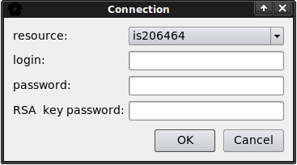
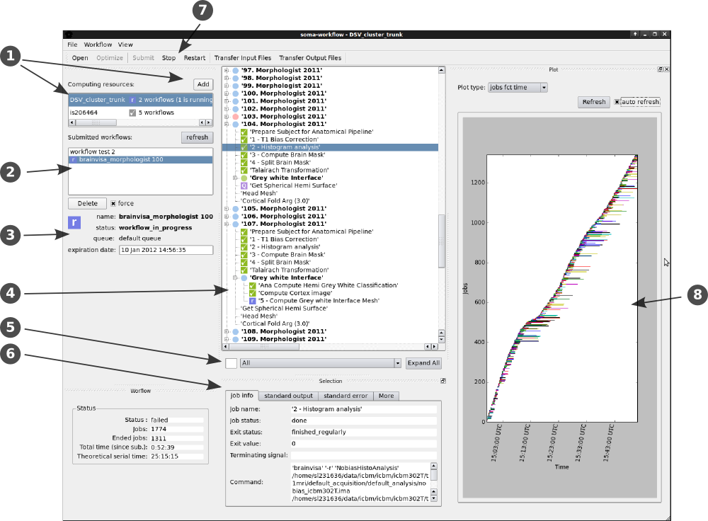
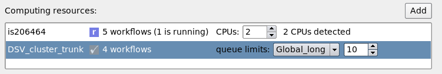
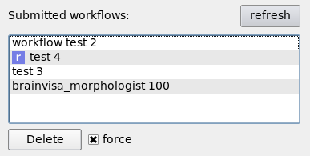
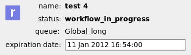
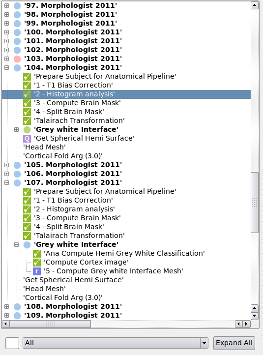
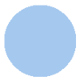
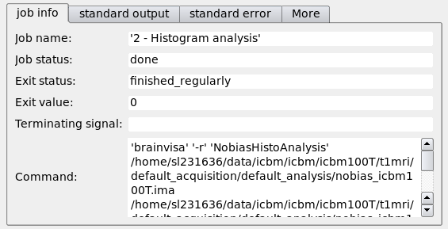
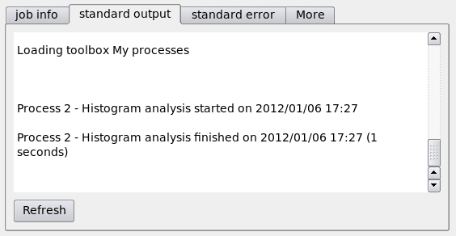
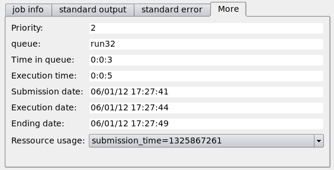

Graphical User Interface¶
Soma-Workflow provides a graphical interface program, named soma_workflow_gui. It is used to submit, stop, restart, and more generally monitor workflows execution on local or remote computing resources.
Connection¶
When the GUI is started, you can connect to one of the configured computing resources (see Configuration (Created automatically)) through a dialog window. Without special configuration, you can always choose the current machine you are using, the number of CPU will be detected and you will be able to control at any time the number of CPU used.
{kind=link}
A login and password are only requested if the connection is remote. To avoid to fill them, the login can be registered in the configuration file, and a RSA key can be used (see Tips, Good Practices and Errors).
Main Window¶
When at least one resource is activated (your multi core machine for example), the main application window looks like the following:
{kind=link}
The interface elements are described in the following sections:
1. Computing resources¶
This widget displays the list of active computing resources (two in the example) and gives at any time their current status (if some workflows are running or not).
Connection to other computing resources is achieved using the “Add” button which opens a new connection dialog window.
{kind=link}
Some special controls may appear for some computing resources. In the example:
The computing resource named “is206464” is the local computer: 2 CPUs were detected, however you can change the number of used CPUs at any time.
The other computing resource is a remote cluster where a limitation of the number of job in the queues was configured. When such a configuration exist, the limits are displayed here and can be adjusted at any time.
2. Workflow selection¶
When a computing resource is selected, this widget display the list of workflows previously submitted to the computing resource. These workflows can either be done or still running. At any time, a blue icon with a white “r” signals the running workflows. The ended workflows stay in the list until they are deleted or their expiration date is reached. The expiration date can be changed in the “Workflow” menu.
{kind=link}
3. Workflow global information¶
This widget displays the main information about the selected workflow.
{kind=link}
The workflow status is updated at a regular time interval (3 seconds).
To change the queue associated to a workflow on a cluster, you need to stop and restart the workflow: at restart, the name of the queue associated to the workflow will be asked again.
You can change the workflow expiration date in the “Workflow” menu. However, note that the running workflows are never deleted.
4. Workflow view¶
The selected workflow is displayed as a tree in the central window. At any time, the icons show the state of the workflow elements (see Status list). Gray icons mean that the workflow was not submitted yet.
{kind=link}
The groups can be extended to be explored. Their icons are little disks:
 -> at least one job is active (running, queued or pending) inside the group.
{kind=link}
{kind=link}
{kind=link}
In the example, all the groups displayed contain running (or queued) jobs, except the group named “103. Morphologist 2011”, where a job failed. The groups named “104. Morphologist 2011” and “107. Morphologist 2011” were extended to display the jobs inside. Among the displayed jobs, some ended with success, one is running, one is in the submission queue, and some are waiting to be submitted (no icon).
5. Job filter¶
The widget under the tree can be used to filter the displayed jobs. Enter text and/or select job status: the tree will be automatically updated.
6. Selection information¶
This widget display the information about the selected item in the tree.
When a job is selected, the following widget is displayed:
  {kind=link}
{kind=link}
{kind=link}
7. Workflow control¶
Use the “Open” button to load a workflow saved into a file. Then press the “Submit” button to submit it to one computing resource.
If a workflow was submitted outside of the GUI (using the Python API for example) you can use the “Refresh” button to load it into the GUI.
The running workflows can be stopped at any time with the “Stop” button. This action removes the jobs from the submission queue and kills the running jobs which statuses toggle from running to failed.
When an ended workflow has some jobs which failed, it can be restarted it with the “Restart” button. The jobs which failed will be submitted again to the computing resource. Note that the submission queue can be changed when you restart a workflow.
8. Plots¶
Several plots can be displayed and refreshed at regular time interval:
the jobs function of the time.
the jobs function of the time, also showing the number or CPU cores used by each job (new in Soma-Workflow 3.0)
the number of jobs running function of the time.
the number of CPU cores running function of the time (new in Soma-Workflow 3.0)